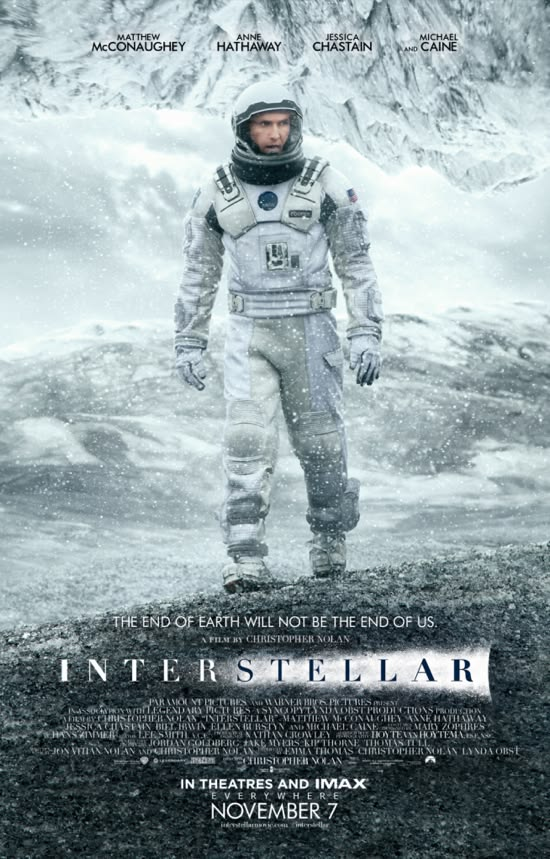
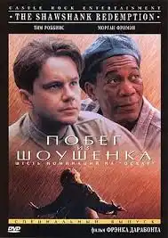
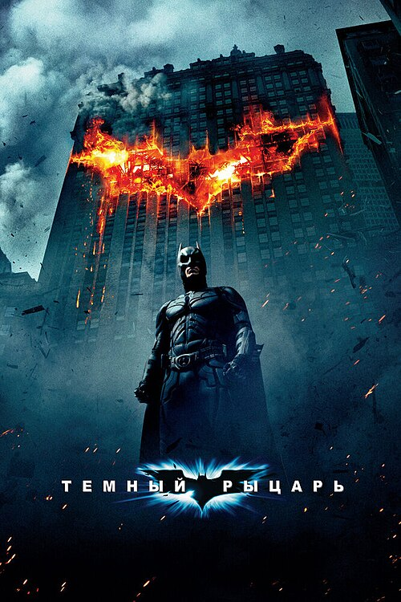

Побег из Шоушенка«Побе́г из Шоуше́нка» (англ. The Shawshank Redemption — «Искупление Шоушенком») — американский драматический фильм 1994 года, сценаристом и режиссёром которого выступил Фрэнк Дарабонт, основанный на повести Стивена Кинга 1982 года «Рита Хейуорт и спасение из Шоушенка». Фильм рассказывает историю банкира Энди Дюфрейна (Тим Роббинс), приговорённого к двум пожизненным срокам заключения в тюрьме Шоушенк за убийство своей жены и её любовника (по одному за каждое убийство), несмотря на его заявления о невиновности. В течение следующих двух десятилетий он заводит дружбу с другим заключённым, контрабандистом Эллисом «Редом» Реддингом (Морган Фриман), и становится ключевым участником операции по отмыванию денег, возглавляемой начальником тюрьмы Сэмюэлем Нортоном (Боб Гантон). В ролях второго плана снялись Уильям Сэдлер, Клэнси Браун, Гил Беллоуз и Джеймс Уитмор.
«Крёстный оте́ц» (англ. The Godfather) — американский эпический гангстерский драматический фильм 1972 года режиссёра Фрэнсиса Форда Копполы, который был соавтором сценария с Марио Пьюзо, основанный на одноимённом романе Пьюзо. В главных ролях Марлон Брандо, Аль Пачино, Джеймс Каан, Ричард Кастеллано, Роберт Дюваль, Стерлинг Хэйден, Джон Марли, Ричард Конте и Дайан Китон. Это первый фильм одноимённой трилогии, в которой рассказывается о семье Корлеоне при патриархе Вито Корлеоне с 1945 по 1955 год. Он фокусируется на превращении его младшего сына, Майкла Корлеоне, отдалившегося от дел семьи, в безжалостного мафиозного босса.

Тёмный рыцаррь«Тёмный ры́царь» (англ. The Dark Knight) — американский полнометражный художественный супергеройский фильм 2008 года с участием одноимённого персонажа комиксов издания DC Comics. Является продолжением фильма «Бэтмен: Начало» (2005) и вторым фильмом во франшизе «Тёмный рыцарь». Режиссёром фильма выступил Кристофер Нолан, сценаристами — сам Нолан, Дэвид С. Гойер и Джонатан Нолан. В фильме приняли участие актёры Кристиан Бейл, Майкл Кейн, Хит Леджер, Гэри Олдмен, Аарон Экхарт, Мэгги Джилленхол, Морган Фримен и другие. По сюжету Бэтмен с помощью лейтенанта Джима Гордона и окружного прокурора Харви Дента пытается контролировать преступность в Готэм-сити. Но когда преступник по прозвищу Джокер погружает город в хаос, Бэтмен начинает сомневаться в своих методах поддержания порядка.